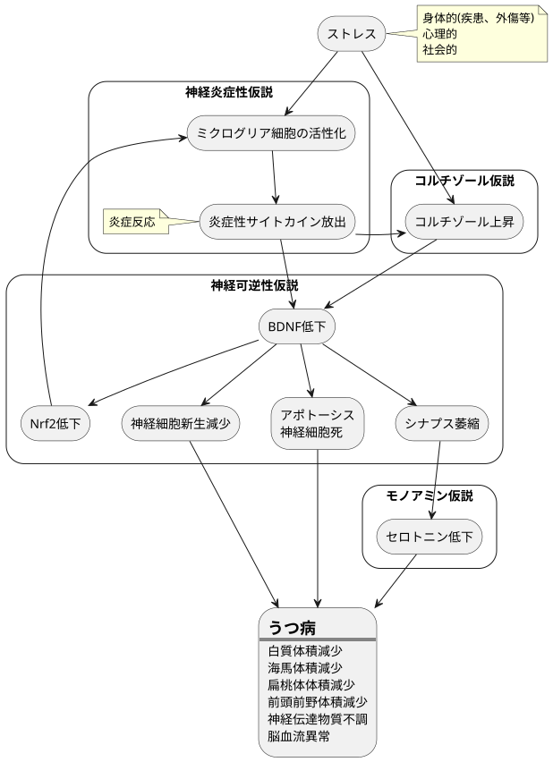

04 月 04 日 ( 金 )
思考整理のためのツールを考える Part 1
タイトルとは若干異なり、思考整理のためにシステム設計用ツールの応用を試みる、というお話になる。
このことを考えるきっかけになったのは Heritage と名付けた自分の疾患の 30 年に渡る知見をまとめたサイトを作り、それを訪問看護の看護師さんに見せたことによる。
話の成り行きでツールを教えて欲しいとの看護師さんの要望を受け取った。PlantUML と Graphviz であるとツール名は伝えたのだけれど、どうせならそれらを思考整理のためにどのように使っているのかまとめたほうが良かろうと考えた。
Heritage には PlantUML と Graphviz というソフトウェアで作成した svg フォーマットの図が描かれている。これらのソフトウェアはテキストエディタで作成したテキストファイルを画像に変換する。
画像のレイアウトはソフトウェアに任せるということになり、あまりユーザが自由自在にレイアウトできるわけではない。というよりも自由にレイアウトするのはほぼ不可能である。
システム・エンジニアやプログラマーは、システムの要件整理やシステムの最適化、システムの設計、システムの実装に重点的に時間を割り振りたいと願うようになる職能なので、仕事上では図の作成や修正などのオペレーション作業になるべく時間を取られたくないと願うことが多い。そのためソフトウェアに任せることができることは任せてしまえと考える人間が多い。筆者もその一人になる。
Photoshop などの画像編集ソフトは美しい図を作成することができる。Photoshop などの画像編集ソフトの問題は編集に時間がかかりすぎるということに尽きる。なにかを最も早く編集できるものは何かと問われたらプログラマーなら十中八九それはテキストだと答えるであろう。
そのように考える先人はたくさんいたに違いない。そのようなニーズを持つ先人たちが作り上げ今もメンテナンスを続けているのが先に述べた PlantUML や Graphviz などのツールになる。
これらのツールを使う前提として知っておかねばならないのが、ユーザはソースとなるテキストファイルを作成し、それらをツールで変換し、目的の画像を得る、というのがだいたいの作業手順となるということだ。

変換作業があるので一見手間がかかりそうな気がするかもしれない。実際には変換自体はプログラムがやるので、変換中の図を作っている本人の手間はまったくない。
それだけではなくテキストファイルの編集の過程で、思考の整理に集中できるというメリットが非常に大きい。それに伴ってさまざまなエピソードを思い出したり新しい知見が発現することすらあるので、テーマに対する知見がますます深まるという効果もある。
筆者はマインドマップや KJ 法、その他ブレインストーミングのための技法などビジネスの様々な場面で利用されているメソッドとの共通点を強く感じている。テキストファイルを利用した思考整理はエンジニア以外の人にもお勧めしたい。
テキストファイルで思考を整理するのもかなり有効ではあるが、そのテキストファイルを元に図として可視化されると、自身の思考を俯瞰するのにも非常に都合がよい。山を登ったり国内外を移動するのに地図を大きく広げて見るようなものだ。
自分自身の思考でここはおかしんじゃないか？とか、これは間違ってるなとか、ここは過剰ではないか？とか、そもそも進むべき道を間違えてるとか、そのような自身の考えの間違いや、望ましくない考えや、望ましくない考えの強度にも気が付きやすくなる。
単純化して言うなら一連の作業は思考の整理とアップデート、見える化に非常に有効だということになる。
次回は具体的にどのようなツールがあって、それぞれどのようなときに向いているのかを、不完全なものになるであろうが整理していきたいと思う。
- Category :
- #日記
- #blog
- #思考整理ツール
- #ライフハック
- #仕事からの応用
思考整理のためのツールを考える Part 2
日が変わっていないが書いた。
ツールを選択する場合にそれぞれのツールのデモを見ることができるとありがたい。そしてそのような Web サイトがあった。Community list of comparisonsbetween Text to Diagram tools というサイトがそれである。
このサイトのデモでは以下のソフトウェアの実行結果を閲覧することができる。GraphViz と D2 は複数のレイアウトエンジンから 1 つを選ぶことができる。
- PlantUML
本来は情報システム設計のための UML 図を作成するためのプログラム。ただシステムの設計場面で UML 以外の図も必要になることから UML 以外の図もある程度サポートしている。
Heritage ではもともとはロジックツリーフォーマットの図を描きたかったが、テキストからロジックツリーを生成するプログラムが現存しないため、PlantUML の Work Breakdown Structure 図をロジックツリーの代用とした。人によってはマインドマップを代用とすることもある。

また note という注釈用の箱を描くことが簡単にできることや、各ボックスの関係を描くのが容易、ボックスの中に簡単にボックスを入れ子にできることもあり、うつ病の発生機序を示す図でも使用した。同図の PlantUML のソースファイルもサイトにアップロードしている。

- GraphViz
薬やタンパク質などの各種因子、ホルモンなどの持つ抑制を表現するためのコネクションの Tee ヘッドを唯一表現できるため Heritage では薬や非薬物療法がどのように作用するのかを示した図を描くのに利用している。この図の GraphViz のソースファイルもサイトにアップロードしている。
 使用可能なレイアウトエンジン
使用可能なレイアウトエンジン- dot: GraphViz のデフォルトレイアウトエンジン
- neato : よくわからないが、汎用的な図の場合、図がこじんまりとした感じになり見やすい図が出力されるとは限らない。どちらかというと筆者は苦手。
パソコン上のローカル環境、つまり端末上で動かす場合、他にもレイアウトエンジンがあるのでそれらも選ぶことができる。レイアウトエンジンの種類は一番多いがそれぞれのレイアウトエンジンの使いどころがよくわからない。
- MermaidJS
生成される図はカラフルで美しいが、汎用的な図を描くの適しているかと言うと PlantUML や D2 とあまりかわらないように感じる。そのようなこともあり個人的にはあまり必要性を感じられず、ほとんど使っていない。綺麗ではあるのだけれど。
ただマインドマップは本当にマインドマップらしい画像を出してくる。もちろんオリジナルのトニー・ブザン氏のマインドマップにはかなわない。
またレーダーチャートや円グラフなど他のソフトウェアでは描けない図を描くことができるので、何が描けるのかを公式サイトでチェックしておくとよいと思う。
いろんな図がカラフルに描かれるので使ってみたいと惹かれると思う。
コネクションの矢印ヘッドの種類が増えるかカスタマイズできるようになれば、他を押しのけて第 1 選択肢になると思う。時間をつくってもう少し評価を深めたい。
- D2
もしかすると汎用的な図を描く目的があって、このソフトが目的を満たすのであれば PlantUML 以上によい選択肢かもしれない。
ソースの構造が html や css、オブジェクト指向言語の影響を受けており可読性が非常に高い (ただしそのためにパンチ量が増える場合もある)。プログラマーだと一番好きになりそうな変換プログラムかもしれない。筆者はこのテキストファイルの記法が一番気に入っている。
このサイトでデモを見ることができるのだけれど、ほぼ全てを TypeScript という Web ブラウザで動作するプログラミング言語で実装していることもあり、パフォーマンスや Web ブラウザへの負荷が高いという問題もある。とはいえ簡便に各プログラムの差異を確認する程度の利用であれば大きな問題は発生しないかと思う。
デモを見た上でこれらのツールを都度適切にチョイスすればよいと思う。筆者がつくった図ももちろん参照していただければ幸いである。
次回から実際のそれぞれのプログラムの使い方について説明していきたいと思う。
- Category :
- #日記
- #blog
- #思考整理ツール
- #ライフハック
- #仕事からの応用
- #PlantUML
- #GraphViz
- #MermaidJS
- #D2
思考整理のためのツールを考える【付録 A】
これまで述べてきたツールや Web でも使えるアイコンのリストを見つけたのでメモしておく。
- Icônes
-
- 概要
- @antfu によって開始され、現在は貢献者のチームによって維持されているパッケージ群のうちの svg アイコン。素晴らしい。
- Web サイト
- https://icones.js.org/
- ライセンス
- MIT License - Anthony Fu 2020
- Icons for D2
-
- 概要
- Terrastruct 社が維持管理している svg アイコン群。法的に有効なライセンスがどこにも明記されていないので不安は残るが Terrastruct 社は将来的にも D2 や Web で無償で使って構わないとホームページに記載している。
- Web サイト
- https://icons.terrastruct.com/
- ライセンス
- 詳細は不明だが Web ページに以下の記載がある (原文は英語)。"D2 ダイアグラムで使用するために厳選されたアイコンとグラフィックのコレクション。これらのホストされたアイコンは、お客様の便宜のために無料で提供されていますが、D2 はこれらを使用することに一切制限されていません。D2 のアイコンは、Web またはローカル上の任意の画像に設定できます。アイコンは追加または削除される可能性がありますが、既存の URL のアイコンが期限切れになったり変更されたりすることはありません。"少なくともオープンソースライセンスであるとはどこにも明記はされていない。Terrastruct, Inc. が Social にある各社意匠のライセンスフィーを負担しているのかもしれず、それらを問題なく使用し、成果物を公開してもかまわないのかもしれない。しかしライセンスが明確化されているわけでもない。Social にある各社意匠は保守的に利用、つまり私的利用にとどめた方が法的に安全かもしれない。
- SVG Repo - Free SVG Vectors and Icons
-
- 概要
- 有限会社 SVG Repo が維持管理するフリーなライセンスで公開されている svg アイコン集。これも素晴らしい。
- Web サイト
- https://www.svgrepo.com/
- ライセンス
- ライセンスのページにライセンスの種類がリストされている。個々の svg 画像のライセンスは各画像のページに記載されているので、そこで確認することになる。
- Font-Awesome
-
- 概要
- Font Awesome というコミュニティ(？) が維持管理している svg リソース集。株式会社なのか任意団体なのか不明だが github.com 上でオープンソースライセンス等のオープンなライセンスにより svg アイコンが公開されている。
- Web サイト
- https://github.com/FortAwesome/Font-Awesome
- ライセンス
- ライセンスに複数のライセンスがリストされており、画像単位でライセンスが明記されてはいないので、デュアルライセンスだと思われる。公式ホームページでは有償ライセンスの拡張版も販売されている。
- Google Fonts
-
- 概要
- Google が公開管理している icon 集。
- Web サイト
- https://fonts.google.com/icons?icon.size=24&icon.color=%231f1f1f
- ライセンス
- icon のライセンスは Apache License 2.0。
- Tango Desktop Project
- プロジェクトが終了している？サイトがすでに存在していない。
- Category :
- #日記
- #blog
- #思考整理ツール
- #ライフハック
- #仕事からの応用
- #PlantUML
- #GraphViz
- #MermaidJS
- #D2
- #SVG
- #svg
- #アイコン
早めに終わらせておかないといけないかもリスト
つい先程、これはやっておきたいことを早めに終えておかないといけないかも、と思わせるできごとがあったので、その早めにやっておきたいことリストをメモしておく。できごと自体は確定ではないので確定したら公開するかもしれないし、しないかもしれない。現時点ではもしかして、という個人の予感にすぎないので伏せておく。
- Heritage の内容をデイケア等で話す。
- ☐ 主治医に確認
- ☐ デイケア責任者に確認
- 今朝から書き始めた思考整理のためのツールを考える を書き上げる。
- ☑ ソフト利用選択基準
- ☐ PlantUML の使い方
- ☐ GraphViz の使い方
- ☐ D2 の使い方
- ☐ Marmaid.js の使い方
☐ 出力画像フォーマットの選択について
- 最悪の事態を想定し残務になりかねない様々な処理を行っておく (現時点で詳細は伏せる)。
- 立山室堂と上高地を再訪したい。
2 つの土地を訪れるには金策を何とかする必要もあり 4 年は必要になる。2 箇所が無理なら立山室堂だけでも再訪しておきたい。可能かどうかはわからない。
- Category :
- #日記
- #blog
- #残件リスト